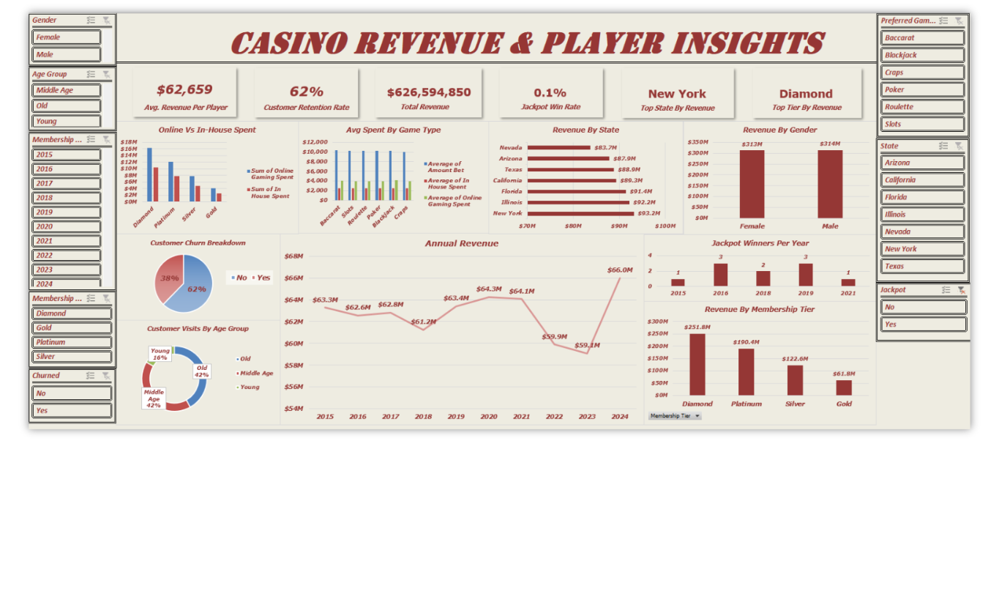
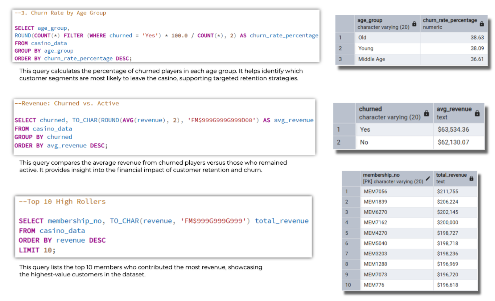
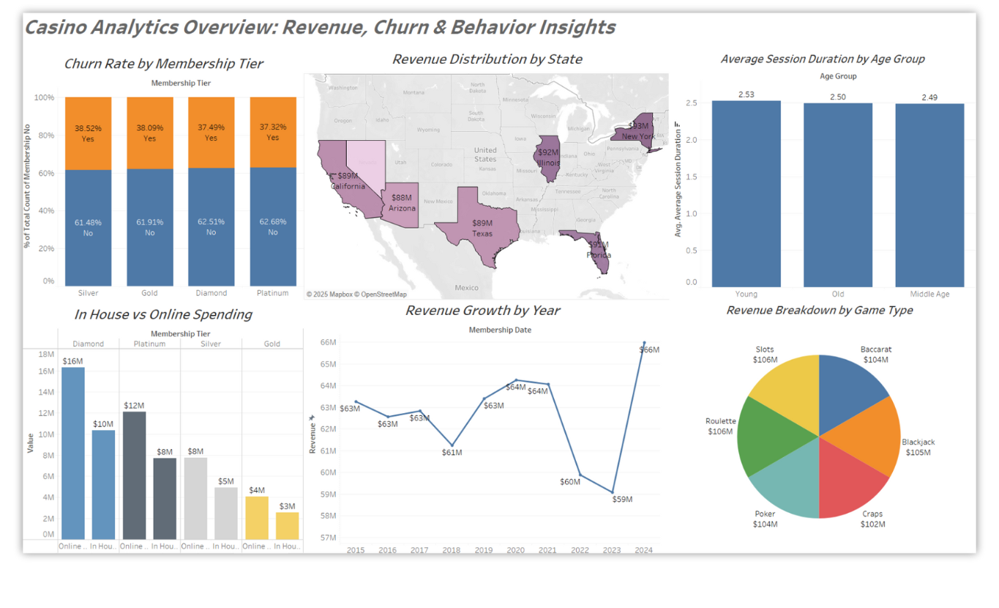
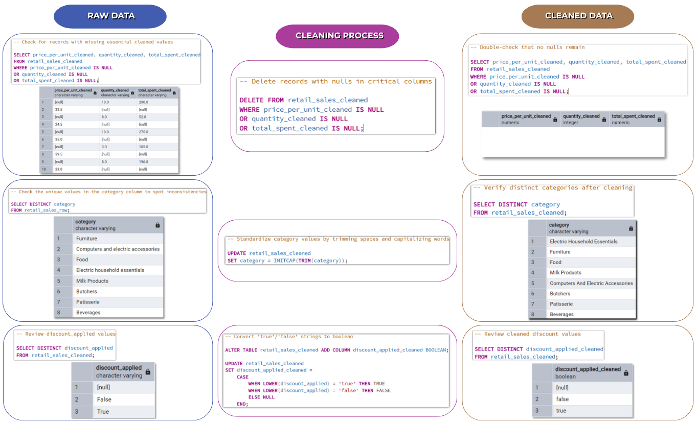
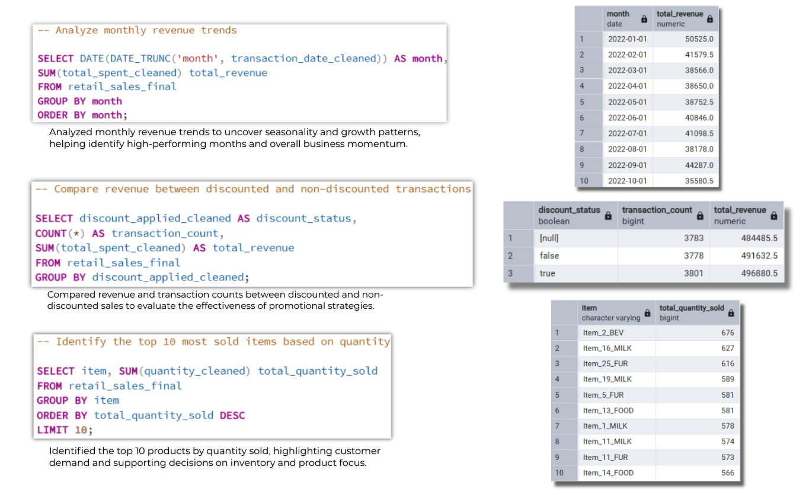
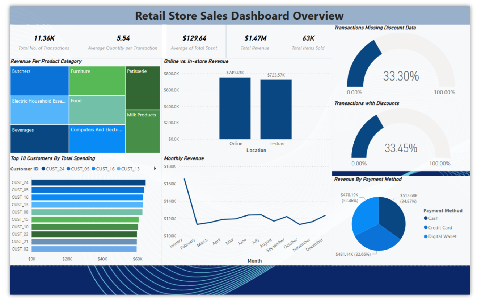

This project is a simulated casino analytics dashboard using AI-generated data. It includes
detailed information about fictional casino members, such as their age, location, membership
tier, and favorite games. It also tracks how often they visit, how much time they spend, and how
much money they bet and win. The main goal is to analyze player behavior and understand how the
casino earns revenue. A pivot table is used to summarize key data, and a dashboard is set up to
display insights in a clear and visual way. This project demonstrates how data can be used to
make smarter business decisions in the gaming industry.


Leveraging my 2+ years of experience in casino marketing, I conducted an exploratory data
analysis using SQL in PostgreSQL on an AI-generated casino dataset. Due to the confidentiality
of actual casino data, a simulated dataset was used to reflect realistic player behavior, churn
patterns, revenue trends, and betting preferences — uncovering insights aligned with real-world
operations.

This project presents an interactive Tableau dashboard built on an AI-generated casino dataset,
developed to reflect realistic player behavior while preserving data confidentiality. Using
insights from prior SQL and Excel analysis, the dashboard visualizes key business metrics such
as churn rates, revenue performance, betting preferences, and player demographics. The goal is
to help casino stakeholders quickly understand customer behavior and optimize marketing
strategies. My two years of casino marketing experience guided the design of meaningful,
data-driven visualizations that simulate real-world operational decision-making.

This project focuses on cleaning and transforming a real-world retail sales dataset from Kaggle
using SQL in PostgreSQL. The raw data contained inconsistencies such as irregular formats,
missing values, and non-numeric entries in key fields like price, quantity, and total spent. I
created a duplicate working table to preserve the original data, then applied systematic
cleaning steps including format standardization, data type conversions, regular expression
filtering, and null handling. Additional transformations involved extracting numeric values,
correcting date formats, and converting Boolean strings. The result is a fully cleaned and
validated dataset—ideal for accurate analysis and business reporting. This project highlights my
attention to data quality and my ability to prepare messy, real-world data for meaningful
insights.

This project presents an exploratory data analysis (EDA) of a real-world retail dataset from
Kaggle, which I previously cleaned and transformed using SQL in PostgreSQL. The analysis
explores key business metrics such as total revenue, average transaction values, customer
purchasing behavior, and product performance. Insights include comparisons between one-time and
returning customers, most frequently purchased items, and category-wise revenue trends.
Time-based analysis highlights daily and monthly sales patterns, while discount effectiveness
and payment method preferences are also explored. This EDA provides valuable insights that
support marketing, inventory, and operational strategies in a retail setting.

This Power BI dashboard presents a comprehensive overview of retail store performance using a
real-world dataset sourced from Kaggle. After performing data cleaning and exploratory analysis
in PostgreSQL, I built this interactive visualization to highlight key business metrics,
including total transactions, average spend, total revenue, and quantity sold. The dashboard
breaks down revenue by product category, location (online vs. in-store), and payment method. It
also identifies top-spending customers, monthly sales trends, and discount-related behaviors. By
combining clear visuals with meaningful insights, this project supports data-driven decisions in
marketing, operations, and customer engagement within a retail environment.